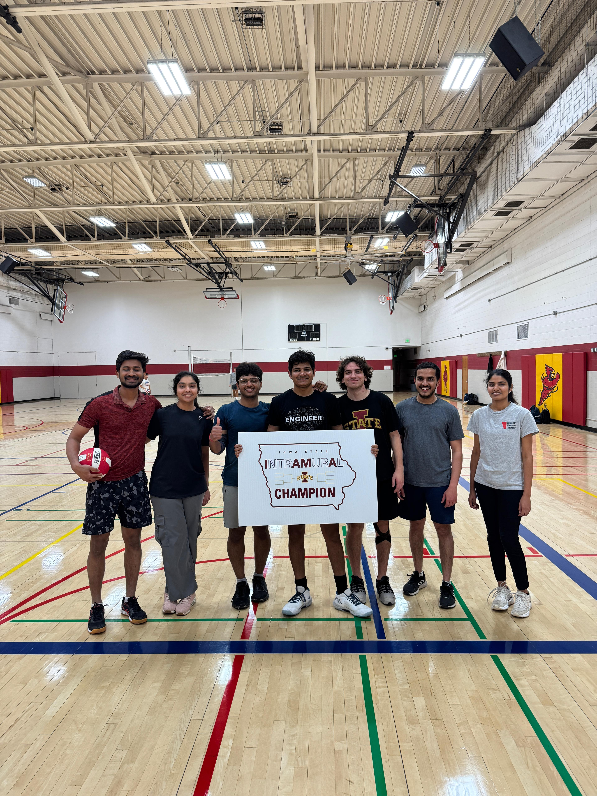
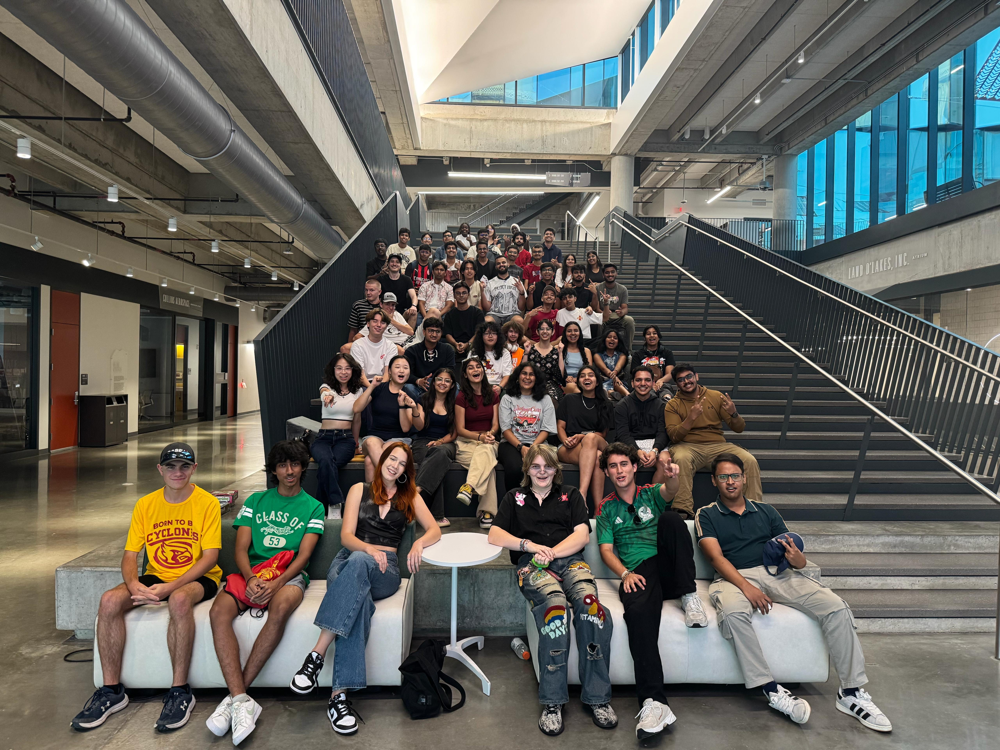
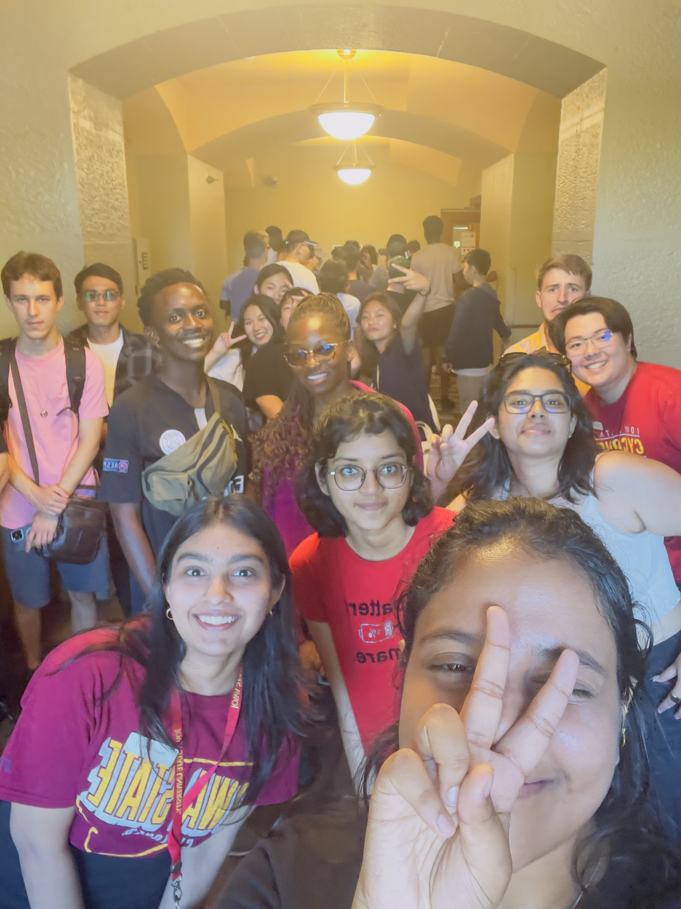
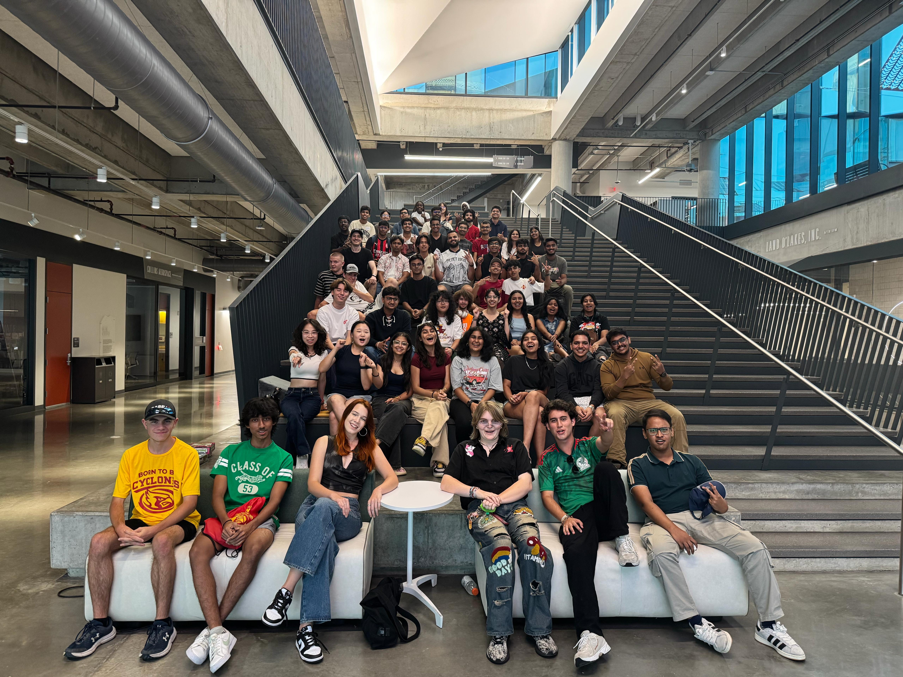
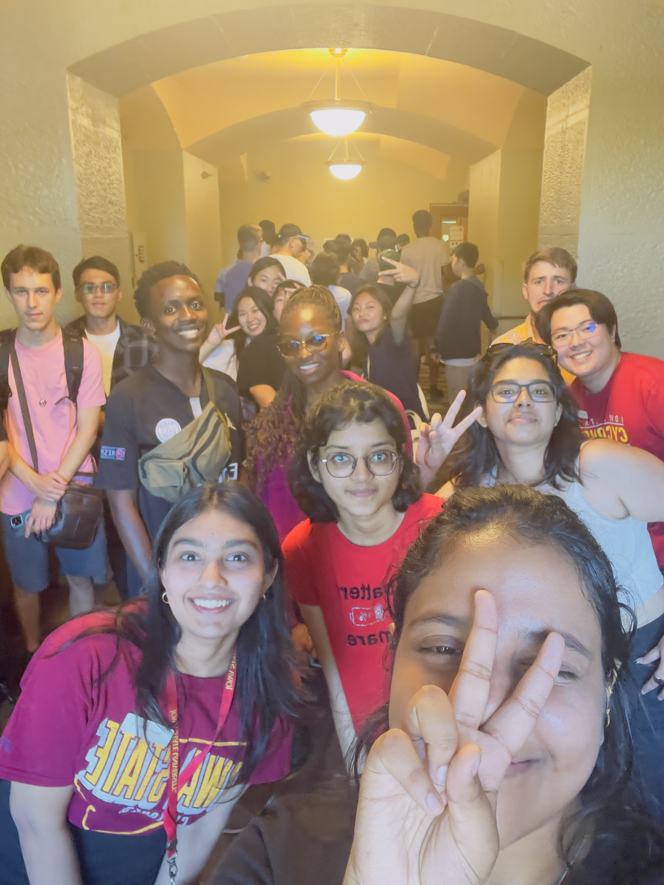

Strength Training & Intramural Sports
The gym and intramural volleyball are where I practice consistency, discipline, and teamwork—the same habits I lean on when debugging stubborn issues or working in an engineering team.
I like setting realistic goals, tracking progress, and celebrating small wins— whether that's adding a bit more weight, playing a tighter game with my team, or finally landing a tricky feature without regressions.
- Goal-oriented training with a focus on long-term progress.
- Intramural volleyball has taught me how to communicate quickly and trust my team.
- Balancing classes, internships, TA work, and training forces me to manage time intentionally.



 


